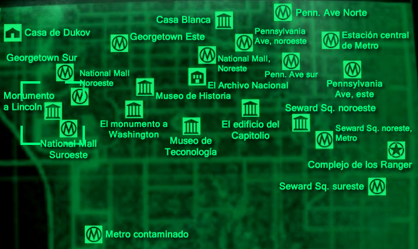

Localizaciones

Megatón Ciudad

Megatón Ciudad Localización
Megaton
Megatón es un extenso asentamiento, ubicado en el interior de un gran cráter con una bomba nuclear sin detonar en su centro, dando lugar a su nombre. Está rodeado por muros improvisados con varios materiales reciclados, la mayor parte de su infraestructura proviene de piezas de aviones de un antiguo aeródromo cercano. Es uno de los dos mayores asentamientos humanos de Yermo Capital, con hasta 28 habitantes con nombre propio y varios colonos de Megatón genéricos, sólo superada por Rivet City en población.
Megatón suele ser el primer asentamiento descubierto por el jugador tras abandonar el Refugio 101, por su proximidad al mismo, su distintiva forma y el hecho de que su ruta de llegada es prácticamente recta lo convierten en un lugar fácil de encontrar, y es, de hecho el primer retazo de civilización que el Trotamundos Solitario encuentra en el Yermo.
Rivet City
Rivet City es el mayor asentamiento de Yermo Capital, o en el área de Washington, DC. Sus habitantes viven en cuartos individuales dentro de un portaaviones. Hay guardias merodeando las 24 horas del día para proteger el barco de Saqueadores, Supermutantes, y todas las demás amenazas del Yermo. Rivet City tiene un área de compras llama «Mercado de Rivet City» (cerrado durante la noche), además de contar con un Museo de Historia americana, un laboratorio, dos bares y un hotel que puedes alquilar una casa por 120 chapas. En el laboratorio se encuentra ademas el Cabezón de inteligencia, en la esquina de una de las mesas.

Rivet City Ciudad
Rivet City Localización
Monumento a Lincoln
Monumento a Lincoln Localización
Monumento a Lincoln
El Monumento a Lincoln es un monumento conmemorativo construido en memoria del presidente de los Estados Unidos de América Abraham Lincoln. Se situa al final del National Mall en Washington D.C.
El edificio, aunque en pie todavía, está dañado, y a la estatua de Lincoln le falta la cabeza (que se puede encontrar a manos de los esclavos huidos del Templo de la Unión).
Edificio del Capitolio
Cuando llegamos al edificio del Capitolio, si estamos un poco lejos de el, veremos varias explosiones, lo mejor es manternerse alejado, coger un Rifle francotirador y aniquilar cuanto puedas, pues la Mercenarios de la Compañia Talon estarán exterminando a los Supermutantes de la zona. Es una de las zonas con un combate a gran escala. Los Mercenarios de la Compañia Talon atacarán con todo: varios mercenarios, Cerebrobots... y los Supermutantes tendrán una gran presencia en la zona ya que habrá varios Supermutantes Maestros, bastantes Brutos Supermutantes, varios Caciques Supermutantes y muchos Supermutantes normales. En la parte de fuera,(si estas muy avanzado en el juego y tienes la expansion Broken Steel) encontrarás un equipo del Enclave, compuesto de 2 soldados, un oficial y un Sanguinario con control mental (si tienes el dispositivo para erradicar las ondas de control mental del Enclave, el Sanguinario eliminará a todos los que le rodeen). También, fuera, nos encontramos un Cacique Supermutante. Antes de entrar en el Capitolio, por la parte posterior, fuera, vemos que hay otro combate entre los Mercenarios de la Compañia Talon y Supermutantes otra vez. Pero si estamos avanzados en el juego, terminará pronto, pues un Vertibird del Enclave, pasará por encima y bombardeará la zona con bombas de plasma, y acabara con Supermutantes y los Mercenarios.
Edificio del Capitolio
Edificio del Capitolio Localización